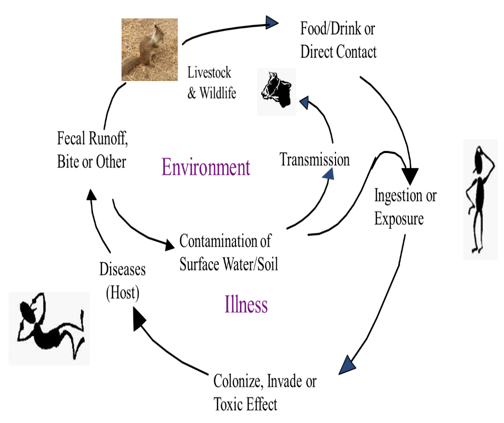
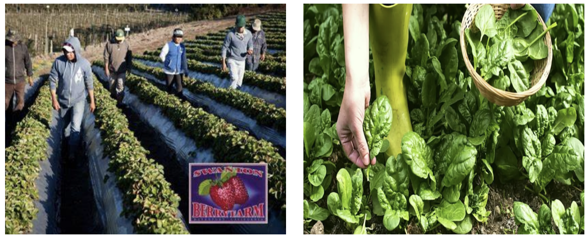
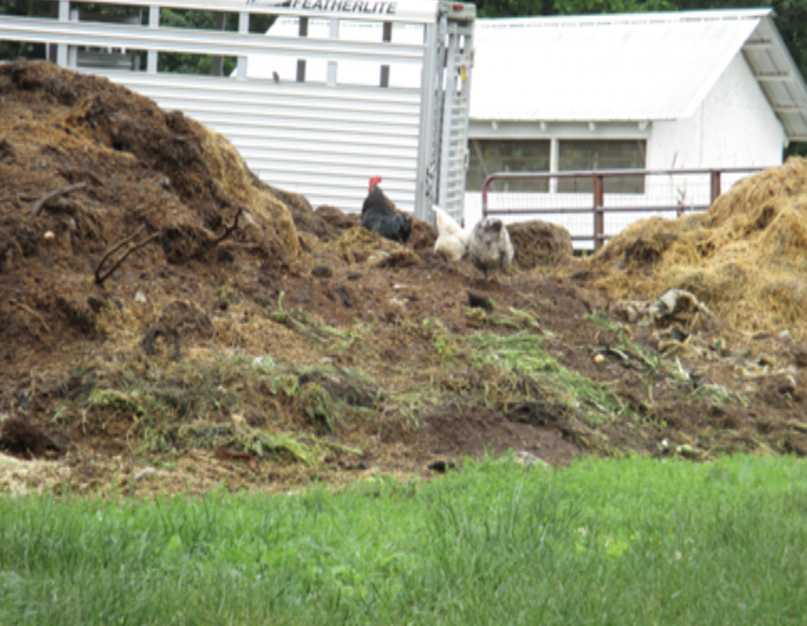

There are three identified factors that can compromise food
safety.
Farm animals in backyard farm (BF) and integrated crop-livestock
farm (ICLF) are a food safety risk
Workers/visitors are a food safety risk as well as a risk to
themselves
Farm environment, specifically manure, and compost are a food
safety risk
Farm Animals as a Food Safety Risk
Animals including livestock, pets, wild animals, birds, pest and
rodents carry variety of human pathogens.

Figure 1. Cycle of contamination
These pathogens can spread to humans and the environment, and then
from the environment to humans through food and water. Many
pathogens can colonize animal gut and increase their number. The
resulting infected animal feces poses an issue by increasing the
spread of zoonotic pathogens.
Recommendation for reducing farm animal-based risks
Consider proximity (location/position) of animals to produce
fields, water sources and flood areas
Position crop areas appropriately, with barriers in place if
they are near animals or areas at risk of runoff by
considering nearby manure drops, manure lagoons or compost
piles, neighbors’ activity (farms and residences), etc.
Active barriers: plant less-risky crops; have workers
“wash out” between working with animals/produce; if
possible work with produce first, then animals
Discourage wildlife/animals from entering production areas
by fencing, animal training, visual deterrents, sonic
canons, animal relocation, discouraging areas to roost or
nest, maintaining buildings in good conditions, keeping up
with pest control programs
Anyone working with the animals should understand risks and be
trained to minimize risks, particularly:
Workers’ activity manual should outline procedures for
different activities that are found in the field
Employ “no harvest buffer zones” around sites of
significant animal intrusion
Radius around intrusion is determined by feces frequency,
trampling, splatter from rain or irrigation
Cull produce, flag, bury, or remove feces from field
depending on harvest dates and repicking, clean hands and
tools
Consider keeping a wildlife monitoring log
Workers/visitors as a food safety risk
Workers/visitors may carry human pathogens, such as Shigella,
Hepatitis A, Norovirus, Cyclospora and others, as a carrier or
asymptotically infected and/or mild sickness. These persons can
spread pathogens to animal/plant as well as environment.
Workers/visitors who are working with multiple farm components,
can transfer pathogens (Salmonella and E. coli) from one component
to others such as animals and plant/produce. Improper/unhygienic
toilets or bathrooms enable workers to spread pathogens through
the fecal-oral route, illness, and injury. Workers/visitors are
often the last to touch produce before it reaches the consumer
through clothing, footwear, or personal tools.

Figure 2A and 2B. Farmers working in the fields
Recommendation to reduce risk due to visitors/malpractice of
workers
Good worker trainings including hand washing, cleaning and
sanitization, reporting illness and compensation significantly
reduce the risks of incidents and create health working
environment
Provide appropriate water for drinking, break areas for
eating, stocked facilities that are regularly maintained,
signage to enforce good hygiene practices and making available
first aid kits
Have SOP (Standard Operating Procedures) plans in place for
injured person specifically recommendation for 1) cleaning,
bandaging, and using glove over Band-Aid, 2) discard
contaminated produce, 3) clean and sanitize tools, 4)
prevent/compensate working with sickness (nausea, diarrhea,
fever)
Provide handwashing-training at the beginning , proper paper
towels and soap
Handwashing signs focus on:
Wash both front and backs of hands, wrists, as well as in
between the fingers and rub 20 sec or more
Rinse hands thoroughly with clean water
Dry with a paper towel
Turn off faucet with used towel
Throw the paper towel in a trash can
Environment as a food safety risk
Manure or animal waste particularly feces are a great source of
nutrients and the best way of recycle waste and soil amendment,
but the whole process possesses a risk of:
Soil and/water contamination through runoff
Contamination of:
Plants, particularly produce grown on the soil amended with
incomplete compost
Other environmental factors such as infiltration of wild
animals, birds, pest and rodents also possess risks of
cross-contamination of food products and the spread of
animal/zoonotic diseases

Figure 3. Chickens resting on manure stockpiles
Recommendation to reduce environment-based risks
Proximity: If you have animals on the farm, consider
their proximity to produce fields and water sources:
Position crop areas appropriately, with barriers in place
if they are near animals or areas at risk of runoff and
flooding by considering nearby manure drops, manure
lagoons or compost piles, neighbors’ activity (farms and
residences), etc.
Prevention: The following measures can be taken to
prevent cross-contaminate other farm components:
Consider using specific clothing and boots to work with
soil amendments
Keep soil amendments covered – a bird dropping on compost
makes it manure again
Implement barriers to prevent runoff in produce area
Put barriers either passive or active or both barriers
such as vegetative strips and fence; keep compost and
manure covered and plant less-risky crops uphill
Have workers “wash out” between working with animals and
produce; work with produce first, then animals, if
possible
Separate finished compost from un-finished and know manure
treatment times and temperatures to make compost
As pathogens can survive in untreated manure, the
following time intervals must be maintained between manure
application and harvest of contact produce (lettuce,
carrots), 120 days, and non-contact produce (peppers,
corn), 90 days
Training:
Develop SOPs for animal and manure handling and finding
feces in the field including hand washing, proper cleaning
and sanitizing technique for equipment, changing clothes
or shoes during moving to one component to other (plant to
animal or animal to plant)
Safe harvest training includes outlining procedures if
significant activity is found in the field
Cull produce, flag, bury, or remove feces from field
depending on harvest dates and repicking, clean hands and
tools
Consider keeping a wildlife movement monitoring log
Employ “no grown/harvest buffer zones” around sites of
significant animal intrusion
Provide information about animal specific pathogens, their
transmission pathways and potential prevention
Final Safety Remarks
Workers, farm livestock, and created waste materials including
feces are potential sources/reservoirs of pathogens for either
human, or animal or both and pathogens can spread from one farm
component to another
Vectors such as unexpected wild-animals, birds, rodents, and
insects often also cross contaminate or introduce pathogens
Considering the farm location and its animal/plant products,
farmers or experts should develop a SOP and safety rules
Training the workers and imposing the rules are the key to make
safer products in ICLFs
Acknowledgements
This is the outcomes of a research project funded by USDA-NIFA
(#20185110628809)